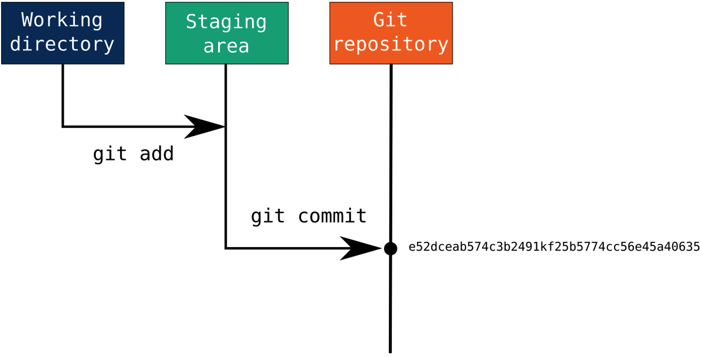
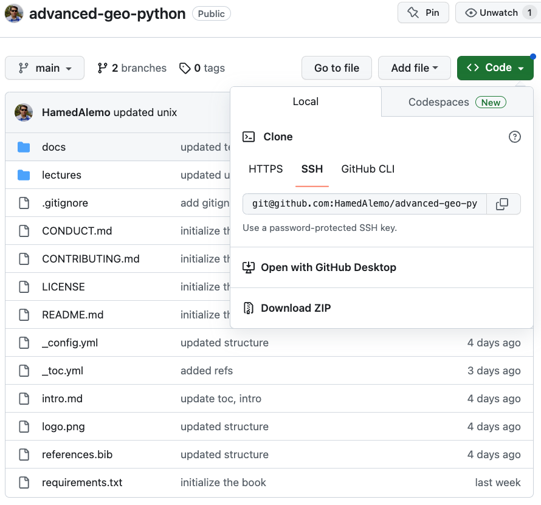

2. Introduction to Version Control and Git#
In this lecture, you will learn what version control is and how to use git and GitHub for version control.
Attribution The content of this lecture are modified from three excellent sources: Git and GitHub from Earth Lab CU Boulder; Intro to Unix from Columbia University; and Version Control with Git from Software Carpentry.
2.1. What is Version Control?#
A version control system maintains a record of changes to code and other content. It also allows us to revert changes to a previous point in time.
2.2. Why Version Control?#
The following figure is one reason you need version control:

Fig. 2.1 Appending a date and number to version control. Source: “Piled Higher and Deeper” by Jorge Cham on www.phdcomics.com.#

Version control is a powerful way to organize, back up, and share your research computing code with collaborators. A Version control system keeps track of a set of files and saves snapshots (i.e. versions, commits) of the files at any point in time. Using version control allows you to confidently make changes to your code (and any other files), with the ability to roll back to any previous state.
Version control also allows you to share code with collaborators, make simultaneous edits, and merge your changes in a systematic, controlled way. There are different ways that a version control system can help you. Checkout the section on “How Version Control Systems Work” on Earth Lab’s course.
2.3. Git and GitHub#
In this course, we will be using git for version control. Git is a distributed version control system that you can use locally on your computer, or through GitHub and GitLab. In this course, we will also use GitHub for assignments and projects.
If you do not have a GitHub account, you need a create one here (it’s free).
Note
Git is very powerful, and has lots of utility with a steep learning curve. In this course, we will only use a subset of its functionality. You are encouraged to practice with git for your day-to-day research.
First step to get started with git, is to make sure you have git installed on your computer. If you are not sure git is installed on your computer, open terminal and run the following command:
$ git --version
If git is installed, you will get an output with the version of git installed. Otherwise, you need to install git following the instructions here.
2.4. Configure git on Your Computer#
The first time that you use git on a computer, you will need to configure your GitHub.com username and email address. This information will be used to document who made changes to files in git. It is important to use the same email address and username that you setup on GitHub.com.
You can set your Github.com username in the terminal by typing:
$ git config --global user.name "username"
Next, you can set the email for your Github.com account by typing:
$ git config --global user.email "email@email.com"
Using the --global configuration option, you are telling git to use these settings for all git repositories that you work with on your computer. Note that you only have to configure these settings one time on your computer.
2.5. Authentication for GitHub#
GitHub requires authentication for any changes to a repo. The preferred method by GitHub is using a SSH key. Setting up SSH involves two steps:
Creating the key itself locally on your computer: Follow these step to generate a new SSH key on your computer and add it to ssh-agent.
Adding the key to your GitHub account: Follow this step-by-step guide to add your SSH key to your GitHub account.
2.6. GitHub Education and GitHub Copilot for Students#
As a student you are eligible for GitHub Education benefits. This will give you access to a set of premium features on GitHub including free credits to use GitHub Copilot.
2.6.1. Applying to GitHub Education#
Navigate to your Education benefits settings.
Under “GitHub Education”, click Start an application.
Complete the form, then click Submit application.
2.6.2. Access GitHub Copilot Student#
After your GitHub Education application was accepted:
Navigate to Education benefits settings.
Under “Free GitHub developer resources for students and teachers”, click Learn more.
Follow the prompts to activate Copilot Student, configuring the Copilot use policies to meet your needs.
2.7. Get Started with a git repository#
Create a new directory, use git init to initiate git version control system:
$ mkdir my_project
$ cd my_project
$ git init
At anytime, you can run git status to see what files have been modified/added/deleted compared to the previous commit, and what files are staged.
To stage a file for addition to the repository use the following:
$ git add <filename(s)>
Note
Always stage files explicitly by name, and never use git add . (which stages every changed file at once). Doing so makes it easy to accidentally commit secrets, large data files, or generated output, and it tends to bundle unrelated changes into a single commit. Run git status first to see exactly what has changed, then add only the files that belong in your next commit.
Then you need to commit the staged files to be added to the history of your repository:
$ git commit -m "a brief and informative commit message"
The commit message should be brief but indicative of what changes are being committed. It’s important to stage and commit your changes in a way that it does not contain several unrelated changes to your code. For example, if you are making changes to different modules of your code, make sure to commit them separately, so if you need to revert one of the changes it’s easy to do so.
The following figure gives you a nice perspective on how staging and committing works:


Fig. 2.2 Modified files are staged using git add. Then, following git commit, all files in the staging area are included in snapshot and become part of the repository’s history, receiving a unique SHA-1 hash identifier. Source: Max Joseph, adapted from Pro Git by Chacon and Straub (2014).#
2.8. Ignoring Files with .gitignore#
Not every file in your project should be tracked by git. You will often have files that are generated, private, or simply too large to belong in your repository’s history, for example your Pixi environment folder (.pixi/), Python caches (__pycache__/, .ipynb_checkpoints/), large datasets, and operating-system clutter like .DS_Store on macOS. Most importantly, you should never commit secrets such as passwords, API keys, or cloud credentials.
Git lets you list these in a plain text file named .gitignore, placed at the root of your repository. Each line is a pattern; any file or directory matching a pattern is left untracked and will not show up in git status or be added by git add. Here is a simple example:
# Pixi environment (recreate it from pixi.toml + pixi.lock)
.pixi/
# Python
__pycache__/
*.pyc
.ipynb_checkpoints/
# Data and outputs
data/
*.tif
# Credentials — never commit these
.env
*.key
# macOS
.DS_Store
A few things to keep in mind:
The
.gitignorefile itself should be committed, so everyone working on the repository shares the same ignore rules..gitignoreonly affects files that are not already tracked. If you accidentally committed a file before ignoring it, remove it from tracking withgit rm --cached <filename>and then commit that change.You do not have to write these from scratch. GitHub maintains a collection of language- and tool-specific templates at github/gitignore, and can add one for you when you create a new repository.
2.9. Push Changed Files to GitHub#
To push your changes to your GitHub repository, you need to create a new repository on GitHub. You can do this using the following steps:
In the upper-right corner of any page, use the drop-down menu, and select New repository.
Type a short, informative name for your repository.
Click Create repository.
Note
You can choose to initialize your repository with a README. While this is recommended, do not do it for this exercise, otherwise the changes you made locally will be out of sync with your GitHub repository.
Now that you have created your repository on GitHub, you need to copy it’s URL and add it to your local git repository. Open your repository on GitHub and click on the green Code button and copy the SSH url (see the following figure).


Fig. 2.3 Accessing the URL of a GitHub repository.#
Lastly, you need to add the URL to your local repository and push the changes to GitHub:
$ git remote add origin <repo url>
$ git push origin main
2.10. Working with an Existing GitHub Repository#
So far, we have talked about initializing a git repository and pushing that to GitHub. But you may need to start working on a project that already has a GitHub repository with content contributed by others. In this case, you can use git clone and git pull commands as following.
Use git clone to create a cloned version of the GitHub repository on your local computer. You don’t need to create a directory for it. When you run the following command it will automatically create a directory in your current path, and pull the files, branches, and all the git history to your computer:
$ git clone git@github.com:<user>/<repository-name>.git
You can copy the url for the repo from GitHub as shown in Fig. 2.3.
You can also use git pull to sync changes that might have been committed to the GitHub repository to your local computer. Note, you should have not made any changes to your local copy that is in conflict with changes made on GitHub to be able to use this command. Otherwise, your request will result in conflicts that needs to be resolved.
$ git pull origin
2.11. Reverting to a Previous Commit#
Let’s say you have made some changes to an existing repository, and committed those to your target branch. Now, you notice a fault or mistake and you would like to revert to an older commit. You can use git revert for this purpose. One of the easiest ways to do this is to find the commit number that you would like to revert to and use that in your git revert command.
To get the list of all commits in your repository, you can use the git log command. The output of git log will be a list of all changes, their commit number and any messages associated with those commits.
Then you can use the following command:
$ git revert <commit number>
This will, by default, open a file (using Vim) to enter a new message for your revert commit. Note: git revert will create a new commit in the history of your git repository, and it is best practice to include a message to indicate the reason for reverting to an old commit. After entering your message, you can save the message using :wq.
Tip
To be able to use git revert your working branch should be clean (no modifications). You should also check out git reset and git restore as alternatives to git revert. git reset can clean all uncommitted changes in your working directory, and git restore can extract specific files from a previous commit.